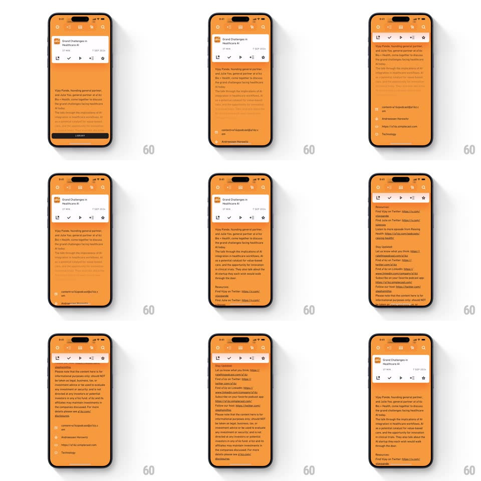

Media
Frame-by-frame

Rebuild this interaction 1:1: Agora's podcast card expansion - tapping a card in the Updates feed morphs it into a full-screen detail view (art, title, action row, long description) with springy shared-element physics, then collapses back into the list.

Rebuild this interaction 1:1: Agora's podcast card expansion - tapping a card in the Updates feed morphs it into a full-screen detail view (art, title, action row, long description) with springy shared-element physics, then collapses back into the list.
## Integration
Integration: stack-agnostic spec - springs given as stiffness/damping, timed motions as duration + curve; map every value to your framework and animation library of choice.
## Scene
Orange feed with a podcast card ("Grand Challenges in Healthcare AI", duration, date). Detail: same art + title pinned top, a white action bar (download, check, play, add, star), long episode description, resources links.
## Motion spec
Pattern: shared-element card-to-detail morph.
- Tap: the card lifts from the list (scale 1 -> 1.03, 120ms) then expands to full screen (spring ~280/24, ~500ms) - its corners round 12px -> 0, art and title travel to their detail positions as true shared elements.
- The action bar fades + rises into place mid-expansion (~60% through, 250ms); description text crossfades from the 2-line preview to the full body (300ms).
- Background feed dims (black 20%) and scales 0.97 during expansion; restores on collapse.
- Drag-down anywhere on the detail: card follows the finger (translate 1:1, scale down to 0.95), release past 25% collapses it back into its list slot (reverse spring, ~400ms); otherwise snaps back open.
- List position is preserved - the card returns to its exact original row.
## Calibration
- The description crossfade must align its first lines with the preview's - no text jump.
- The white action bar is part of the expanded card, not a separate sheet.
## Reduced motion
Card crossfades to the detail layout in place.
## Don't miss
- Everything stays on the orange theme - the detail is a grown card, not a new screen.
- The star/action icons animate a tiny pop when the bar lands (scale 0.8 -> 1, staggered 30ms).